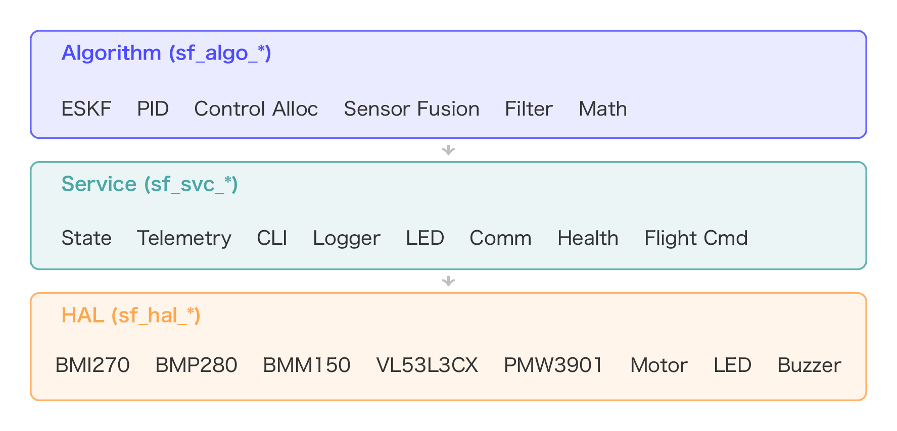

制御を学び、実装し、実験するための
教科書で学んだPID・姿勢推定を、シミュレータと実機で「実際に飛ぶもの」へ。設計から解析・教育までを一気通貫で扱えます。
アイデアを飛行制御として形にし、データで検証し、教材に還元する。研究と教育の両輪を1つのエコシステムで回します。
プラントモデル・カスケード制御・ループ整形を数値で設計。
ESP-IDF 上に模範的なC++ファームウェアとして実装。
SILシミュレータと実機で飛行試験。同じコードを検証。
テレメトリ・ログをPythonで可視化し挙動を定量評価。
得られた知見をワークショップ教材へフィードバック。
cd landing && python3 -m http.server で起動してください。
M5Stack StampFly をベースにした超小型クアッドコプター。豊富なセンサを積み、本格的な状態推定・制御を学べます。
実機がなくても大丈夫。物理シミュレータ上で同じファームウェアを走らせ、制御アルゴリズムを安全に検証できます。
SIL上での離陸・ホバリング。実機と同一の制御コードが動作。
ESKF と相補フィルタを同条件で並走させ姿勢推定を比較。
現実的なセンサノイズ下での推定器の優劣を定量化。
学習から本格的な研究まで。コマンド1つでビルド・書き込み・解析まで完結します。
実機なしでドローン操縦を体験。制御アルゴリズムの検証にも使えます。
ファームウェアをビルドして実機で飛行。sf flash vehicle -m の一発。
PC/スマホから takeoff・hover・land などの高レベルコマンドを送信。
4つの飛行モードを搭載。カスケード制御を学びカスタマイズ可能。
IMU・気圧・ToF・オプティカルフローをリアルタイム取得。
ログを記録し、Pythonで解析・可視化。研究にそのまま使えます。
角速度制御から位置保持まで。カスケード制御の各層を段階的に体験できます。
最内ループ。ジャイロのみで角速度をフィードバック制御。
姿勢角をPID制御。スティックを離すと水平に復帰。
ToF/気圧と鉛直速度で高度を自動保持。
オプティカルフローで水平位置をその場にキープ。
| MCU | ESP32-S3（M5Stamp S3） |
| フレームワーク | ESP-IDF v5.5.2 + FreeRTOS |
| 姿勢推定 | ESKF（Error-State Kalman Filter） |
| 通信 | ESP-NOW + WiFi（テレメトリ） |
| センサー | BMI270 / BMM150 / BMP280 / VL53L3CX / PMW3901 |
| 制御周期 | 400 Hz リアルタイムループ |

環境構築から PID 制御による自律飛行まで。8つのレッスンで飛行制御の仕組みを体系的に習得します。各レッスンをクリックすると対応するスライドが開きます。
クローンして install.sh を実行するだけ。sf CLI とシミュレータ依存が一括で入ります。
git clone https://github.com/M5Fly-kanazawa/stampfly_ecosystem.git cd stampfly_ecosystem ./install.sh